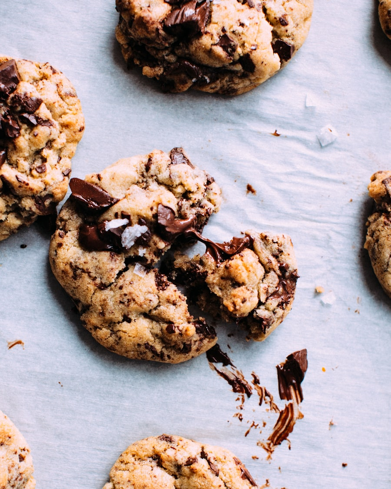

Classic Chocolate Chip Cookies
Soft, chewy, and packed with melty chocolate chips. This simple cookie recipe comes together quickly and bakes up golden brown every time.
Preparation time
- Total: Approximately 30 minutes
- Preparation: 15 minutes
- Baking: 12-15 minutes
Ingredients
- 1 cup butter, softened
- 1 cup white sugar
- 1 cup brown sugar, packed
- 2 large eggs
- 1 teaspoon vanilla extract
- 3 cups all-purpose flour
- 1 teaspoon baking soda
- 1/2 teaspoon salt
- 2 cups chocolate chips
Instructions
- Preheat oven: Preheat your oven to 350°F (175°C) and line a baking sheet with parchment paper.
- Cream butter and sugars: In a large bowl, beat the butter, white sugar, and brown sugar together until light and fluffy.
- Add eggs and vanilla: Mix in the eggs one at a time, then stir in the vanilla extract.
- Combine dry ingredients: In a separate bowl, whisk together the flour, baking soda, and salt, then gradually add to the wet mixture.
- Fold in chocolate chips: Gently stir in the chocolate chips until evenly distributed.
- Bake: Drop rounded tablespoons of dough onto the baking sheet, spaced apart, and bake for 12-15 minutes until edges are golden.
- Cool and enjoy: Let cookies cool on the sheet for a few minutes before transferring to a wire rack.
Nutrition
The table below shows nutritional values per cookie (makes about 24 cookies).
| Calories | 180kcal |
| Carbs | 24g |
| Protein | 2g |
| Fat | 9g |